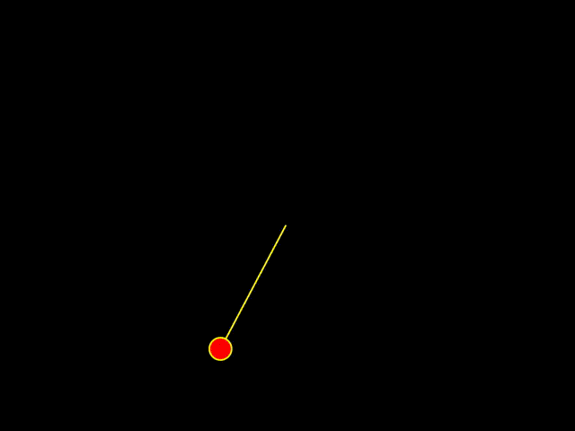
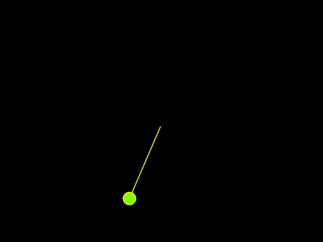
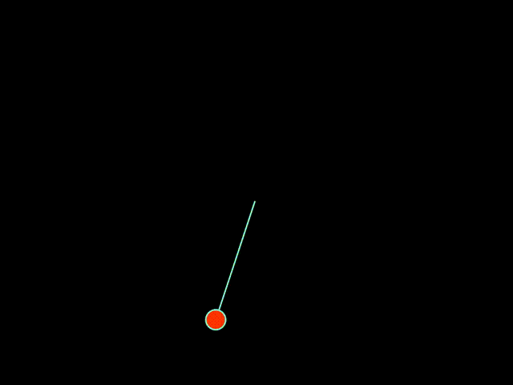
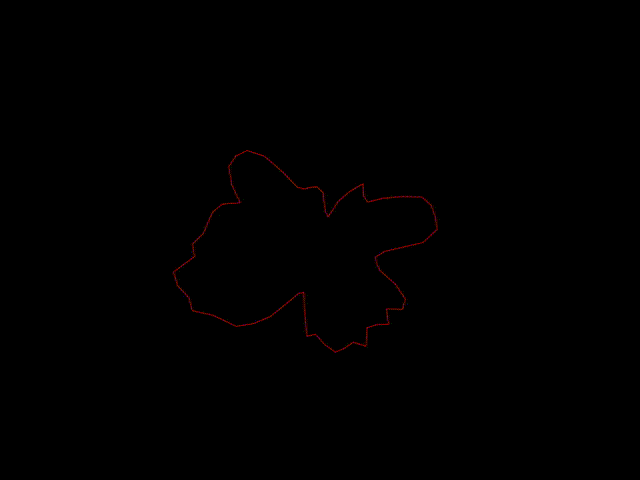
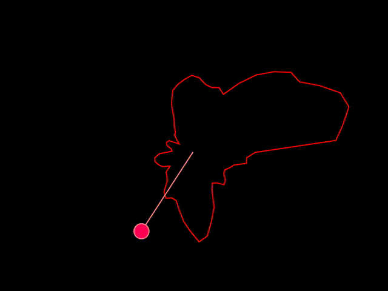
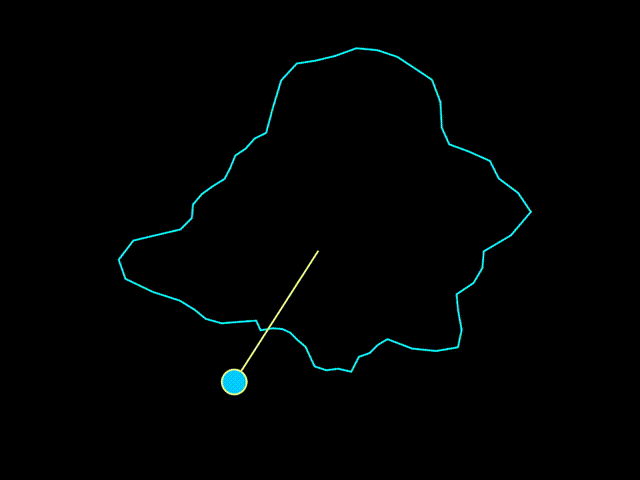

Final prototype presentation
The final prototype combines the noise wave background with the simulated pendulum in p5.js to form a visual spectacle
Making process
1. Create a pendulum
2. Change the color of the ball as it swings
3. Change the color of the rope as it swings
4. Create a noise background
5. Superimpose the noise background and the pendulum
6. Change the color of the noise background as the pendulum swings
